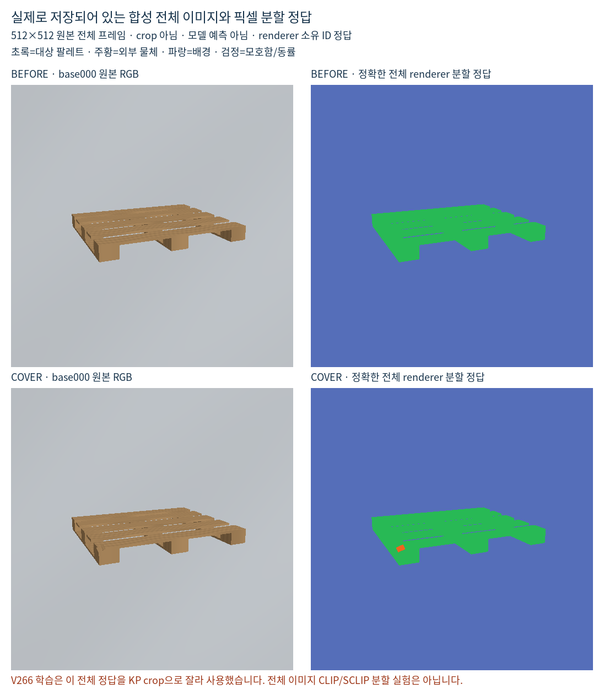

V266은 전체 이미지 CLIP 분할을 시험하지 않았습니다. 초기 키포인트 crop의 DINO 특징에 작은 분할 모듈을 학습한 결과입니다. 사용자가 제안한 전체 이미지의 문맥을 이용하는 방식과 달랐으며, 그 제안이 실패했다고 판단할 근거가 아닙니다.
가능합니다. 보이는 대상 팔레트가 빠짐없이 표시된 마스크라면, 전체 이미지의 대상 팔레트 / 대상 아님 이진 분할 정답입니다. 나머지 영역을 콘·상자·바닥으로 세분화할 필요는 없습니다. 일부 팔레트만 주석했다면 미표시 팔레트는 negative로 만들면 안 됩니다.
전체 RGB → 전체 팔레트 확률 지도 → 원영상의 초기 키포인트 주변 확인 → 보임 확인 후 위치 보정이 사용자 의도에 맞는 순서입니다. 이미지 간 특징 묶기는 팔레트 픽셀을 positive, 확실한 non-target를 negative로 구성할 수 있습니다.
마스크 밖은 외부 가림뿐 아니라 좌표 오차나 틈일 수 있습니다. 또한 non-target를 콘/배경으로 구별하는 정답은 binary mask에 없습니다. 전체 이미지의 사전학습 분할 출력을 보조 근거로 쓰더라도 실제 GT와 구분해야 합니다.
| 자료 | 있는 정답 |
|---|---|
| 사용자의 원래 합성 데이터 | 보이는 대상 팔레트 마스크. 나머지 물체의 세부 의미 GT를 가정하지 않음 |
| V266의 별도 진단용 합성440개 buffer | 렌더러의 전체512×512 target/foreign/background 소유 ID |
| 실사223장 | 키포인트 가림 주석. 픽셀 분할 GT는 없음 |
앞서 확인한 3종 GT는 별도 진단용 자료의 것입니다. 사용자의 원래 합성 데이터에 모든 물체의 분할 GT가 있다는 뜻으로 설명하면 안 됩니다.
초기 KP96×96 crop →224 resize →동결 DINOv2 16×16 공간 특징. GT도 같은 crop으로 잘랐습니다. 기존 V264를 고정하고 분할/가림 점수 추가 모듈23,204개 파라미터를 각1,000업데이트했습니다. BCE+분할CE, 대조 방식만 픽셀 대조손실0.1 추가입니다. 110개 진단용 합성 base 중 학습86/검증24이며, 사용자 대용량 visible-mask 데이터 전체를 새로 학습한 것이 아닙니다.
모델 예측이 아닙니다. 사용자의 원래 데이터 GT와도 구분해야 합니다.

정정 상세·binary mask 활용·학습 방법 · 예시 출처와SHA · 생성 코드
새 학습·모델 추론·PnP·문턱 조정0. 기존 모델·수치·주석은 보존했습니다. 전체 이미지 CLIP 기반 비교는 미실행입니다.